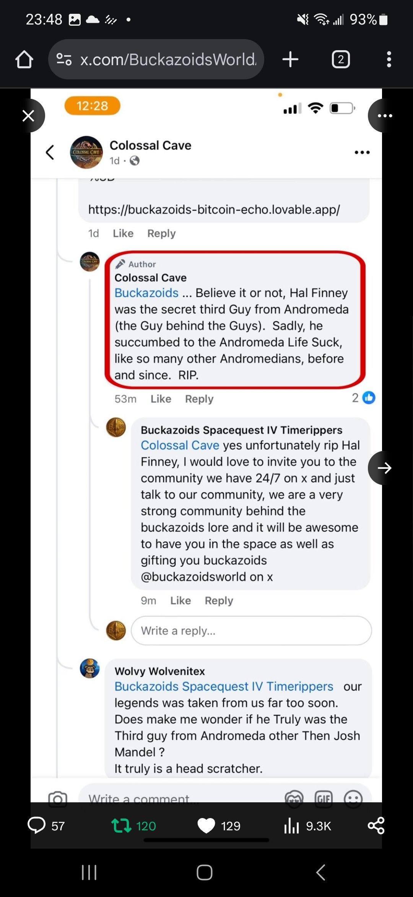

Project B59 · B59-904.021 · attributed research lead
Deleted Colossal Cave Reply Referencing Hal Finney
Screenshot preserving a now-deleted reply attributed to the official Colossal Cave Facebook account stating that Hal Finney was the “secret third Guy from Andromeda.”


Evidence boundary. The screenshot establishes that Project B59 possesses a capture attributed to the Colossal Cave account containing this statement. It does not independently prove the underlying claim about Hal Finney, identify who wrote the account reply, or establish a formal relationship between Finney and Sierra On-Line.
Citation
Colossal Cave account. Deleted Facebook reply referencing Hal Finney as the “secret third Guy from Andromeda.” Screenshot preserved in the Project B59 research collection; original permalink not recovered.
Provenance
Project B59 preserves the screenshot because the original comment was later deleted. The image shows the Colossal Cave account name and an “Author” marker, but the original Facebook permalink and independent archival capture have not been recovered.